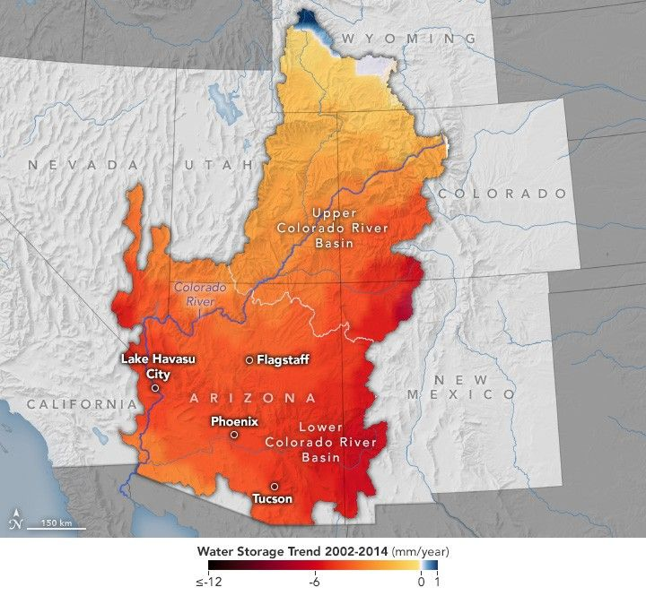

Arizona’s Declining Groundwater
By measuring the gravitational pull of water for more than two decades, NASA satellites have monitored changes in the groundwater supplies of the Colorado River Basin. A recent analysis by Arizona State University researchers revealed rapid and accelerating losses in the basin’s underground aquifers between 2002 and 2024. Some 40 million people rely on water from these aquifers, which span parts of Arizona, California, Colorado, Nevada, New Mexico, Utah, and Wyoming.
The basin lost about 27.8 million acre-feet of groundwater during this period—roughly equivalent to the storage capacity of Lake Mead, according to Karem Abdelmohsen, an associate research scientist at ASU.
About 68% of the losses occurred in the lower basin, primarily in Arizona. The research relied on data from the GRACE (Gravity Recovery and Climate Experiment) and GRACE-FO missions, integrated with land surface models such as NASA’s North American Land Data Assimilation System and in-situ precipitation data.
Similar conclusions were reached in a 2014 study led by Professor Jay Famiglietti. He warned that, if left unmanaged, groundwater levels could continue to drop, putting Arizona’s water security and food production at significant risk.
The GRACE mission data reveal accelerating losses. Between 2002 and 2014, parts of western Arizona (La Paz and Mohave counties) and southeastern Arizona (Cochise County) lost groundwater at about 5 mm (0.2 inches) per year. Between 2015 and 2024, this rate more than doubled to 12 mm (0.5 inches) per year.
Two factors likely explain the acceleration. First, the transition from a strong El Niño (2014–2016) to a “triple-dip” La Niña (2020–2023) reduced rainfall over the Southwest, slowing aquifer recharge. Second, groundwater use for agriculture increased, particularly with the expansion of large alfalfa farms in southern Arizona around 2014. Dairies, orchards, cotton, corn, and pecans also contributed. Irrigated agriculture consumes about 72% of Arizona’s water; cities 22% and industry 6%, according to the Arizona Department of Water Resources.
Many farms use flood or furrow irrigation, which releases water into trenches across fields. While inexpensive and widely used for alfalfa and cotton, it leads to higher evaporation compared with overhead sprinklers or drip irrigation.
The OLI (Operational Land Imager) on Landsat 8 captured an image of desert agriculture in La Paz and Maricopa counties on July 12, 2025. The rectangular fields around Vicksburg and Wenden are mostly alfalfa, while fields near Aguila grow fruits and vegetables such as melons, broccoli, and leafy greens. Some alfalfa fields in Butler Valley have gone fallow in recent years due to groundwater pumping restrictions by the Arizona State Land Department.
The study also found evidence that groundwater management helps. Active management areas and irrigation non-expansion zones established under the Arizona Groundwater Management Act of 1980 reduced water losses in some regions. The designation of a new active management area in the Willcox Basin in 2025 is expected to slow groundwater depletion further. Still, Abdelmohsen noted, “losses to groundwater far outpace surface water losses. This is a big warning flag.”
NASA supports multiple missions and tools for water resource management. Among them is OpenET, a web-based platform that uses satellite data to measure water released by plants and soils, helping farmers optimize irrigation and improve “crop per drop.”